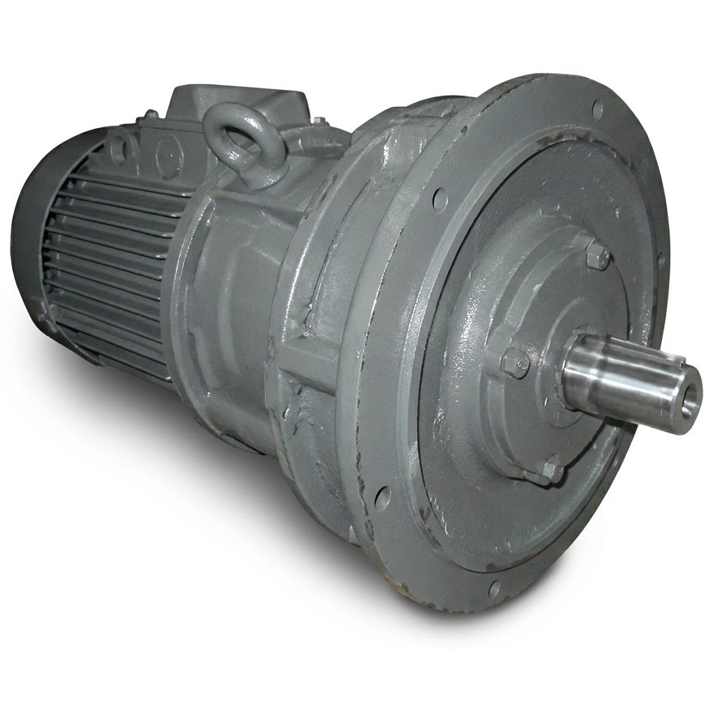
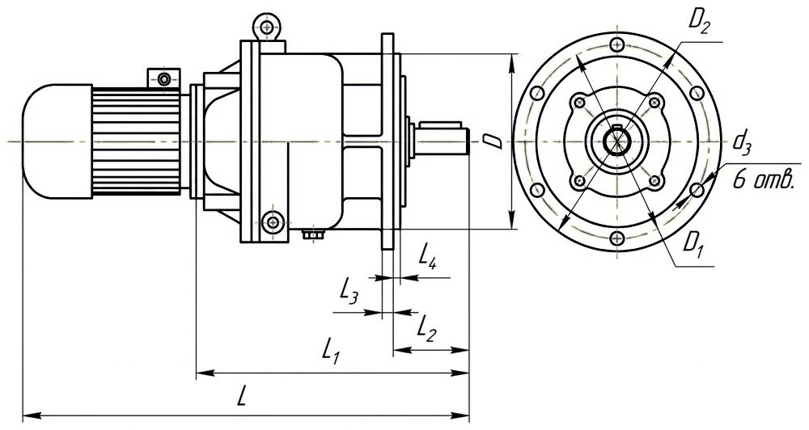
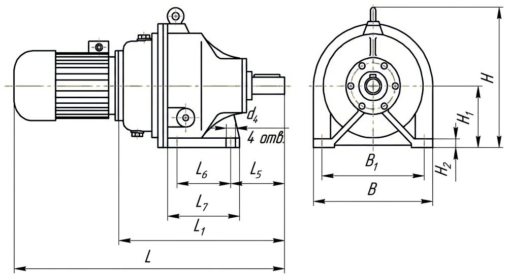
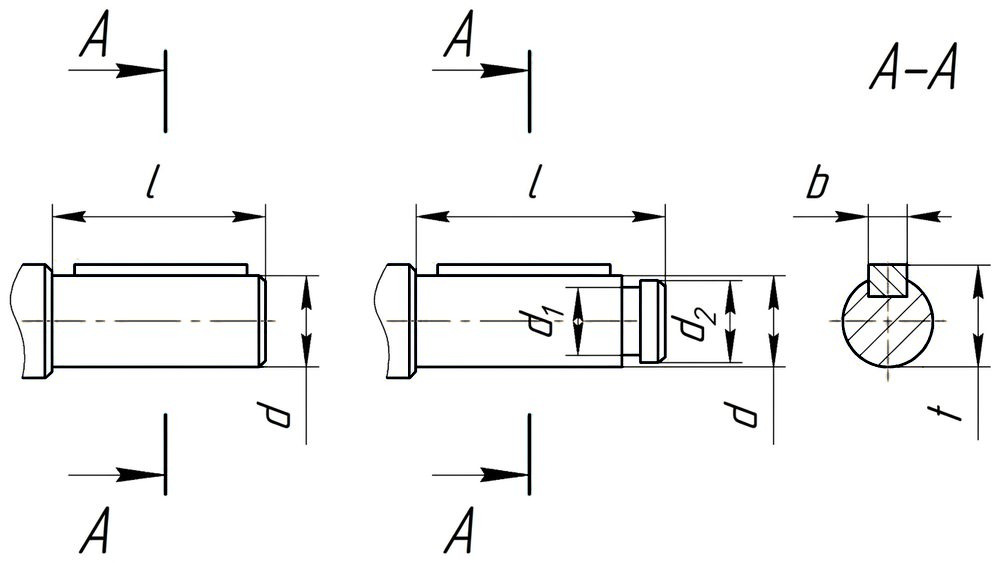

Позвонить: (4842) 75-75-05
Написать сообщение: m-40@inbox.ru
- Главная
- О компании
- Контакты
- Редукторы и мотор-редукторы
- Колеса крановые
- Блоки полиспаста
- Шкивы тормозные
- Муфты
- Крюки и крюковые подвески
- Грузовые барабаны
- Шлицевые детали
- Конические шестерни
- Цилиндрические шестерни
- Запасные части для козловых кранов
- Запасные части для портальных кранов
- Запасные части для башенных кранов
- Техническая информация
- Правовая информация
Мотор-редукторы → Мотор-редукторы МПО
- Главная
- О компании
- Контакты
- Редукторы и мотор-редукторы
- Колеса крановые
- Блоки полиспаста
- Шкивы тормозные
- Муфты
- Крюки и крюковые подвески
- Грузовые барабаны
- Конические шестерни
- Цилиндрические шестерни
- Шлицевые детали
- Запасные части для козловых кранов
- Запасные части для портальных кранов
- Запасные части для башенных кранов
- Техническая информация
- Правовая информация

В зависимости от положения в пространстве мотор-редукторы изготавливаются следующих исполнений:
Щ - горизонтальное на лапах;
Ф - горизонтальное фланцевое;
В - вертикальное фланцевое валом вниз;
ВК - вертикальное фланцевое валом вниз с канавкой на выходном валу.
Пример условного обозначения мотор-редуктора при заказе:
МПО2М-15ВК-32,1-11/45-4АМ132М4-У3, где:
МПО2М - тип мотор-редуктора - планетарный;
15 - условный диаметр водила;
ВК - исполнение;
32,1 - передаточное отношение;
11 - мощность электродвигателя, кВт;
45 - частота вращения выходного вала, об/мин;
4АМ132М4 - тип электродвигателя;
У3 - климатическое исполнение и категория размещения.
Основные технические характеристики мотор-редукторов МПО
| Наименование | Типоразмер мотор-редуктора | |||
| МПО1М-10 | МПО2М-10 | МПО2М-15 | МПО2М-18 | |
| Допускаемая консольная нагрузка на выходном валу, Н | 1500 | 3000 | 7000 | 12000 |
| КПД | 0,97 | 0,95 | ||
| Масса, кг (без электродвигателя) | 50 | 70 | 180 | 230 |
Основные технические характеристики мотор-редуктора МПО1М-10
| Частота вращения выходного вала n, об/мин | Номинальный крутящий момент на выходном валу МКР, Н·м | Мощность электродвигателя P, кВт |
| 125 | 113 | 1,5 |
| 227 | 3,0 | |
| 160 | 89 | 1,5 |
| 177 | 3,0 | |
| 325 | 5,5 | |
| 200 | 71 | 1,5 |
| 142 | 3,0 | |
| 260 | 5,5 | |
| 250 | 57 | 1,5 |
| 113 | 3,0 | |
| 208 | 5,5 | |
| 283 | 7,5 |
Основные технические характеристики мотор-редуктора МПО2М-10
| Частота вращения выходного вала n, об/мин | Номинальный крутящий момент на выходном валу МКР, Н·м | Мощность электродвигателя P, кВт |
| 6,3 | 543 | 0,37 |
| 16 | 434 | 0,75 |
| 20 | 347 | 0,75 |
| 694 | 1,5 | |
| 31,5 | 220 | 0,75 |
| 441 | 1,5 | |
| 50 | 139 | 0,75 |
| 278 | 1,5 | |
| 555 | 3,0 | |
| 63 | 441 | 3,0 |
Основные технические характеристики мотор-редуктора МПО2М-15
| Частота вращения выходного вала n, об/мин | Номинальный крутящий момент на выходном валу МКР, Н·м | Мощность электродвигателя P, кВт |
| 4,6 | 1509 | 0,75 |
| 6,7 | 1036 | 0,75 |
| 14 | 991 | 1,5 |
| 18 | 1542 | 3,0 |
| 31 | 1642 | 5,5 |
| 45 | 1131 | 5,5 |
| 1542 | 7,5 | |
| 2262 | 11,0 | |
| 59 | 1176 | 7,5 |
| 1725 | 11,0 |
Основные технические характеристики мотор-редуктора МПО2М-18
| Частота вращения выходного вала n, об/мин | Номинальный крутящий момент на выходном валу МКР, Н·м | Мощность электродвигателя P, кВт |
| 6,7 | 2072 | 1,5 |
| 15 | 1851 | 3,0 |
| 18 | 2827 | 5,5 |
| 22 | 2313 | 5,5 |
| 3154 | 7,5 | |
| 32 | 2169 | 7,5 |
| 3181 | 11,0 | |
| 49 | 2077 | 11,0 |
| 2833 | 15,0 | |
| 64 | 2169 | 15,0 |



Габаритные и присоединительные размеры мотор-редукторов МПО, мм
| Тип | B | B1 | D | D1 | D2 | H | H1 | H2 | L | L1 | L2 | L3 | L4 | L5 | L6 | L7 | d | d1 | d2 | d3 | d4 | b | t |
| МПО1М-10 | 300 | 250 | 270 | 300 | 330 | 365 | 160 | 20 | 745 | 365 | 110 | 16 | 6 | 125 | 150 | 210 | 40k6 | 32 | 38 | 13 | 17 | 12 | 43 |
| МПО2М-10 | 300 | 250 | 270 | 300 | 330 | 365 | 160 | 20 | 730 | 430 | 110 | 16 | 6 | 125 | 150 | 210 | 40k6 | 32 | 38 | 13 | 17 | 12 | 43 |
| МПО2М-15 | 460 | 390 | 330 | 375 | 420 | 495 | 225 | 35 | 1010 | 620 | 190 | 20 | 10 | 215 | 210 | 295 | 65k6 | 55 | 62 | 22 | 22 | 18 | 69 |
| МПО2М-18 | 600 | 520 | 470 | 520 | 565 | 570 | 315 | 45 | 1310 | 790 | 220 | 25 | 10 | 250 | 280 | 375 | 80k6 | 70 | 78 | 22 | 26 | 22 | 85 |
Узнать цену интересующего Вас мотор-редуктора Вы можете здесь, или по телефону:
(4842) 75-75-05
КМЗ
Калужский механический завод
г. Калуга, ул. Дорожная, д. 40
Пн–Пт 8:00–17:00
Пн–Пт 8:00–17:00
© 2026 ООО «Калужский механический завод»
ИНН 4028052180 · КПП 402801001